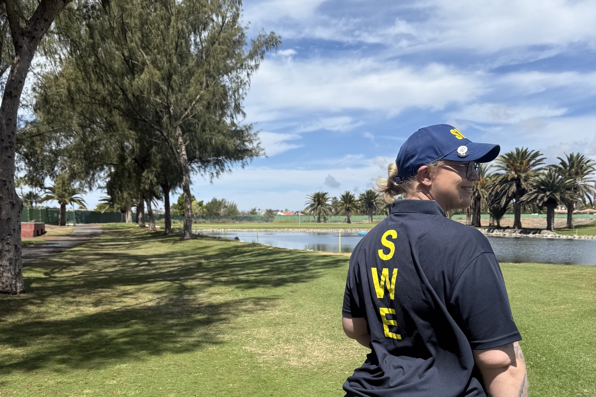
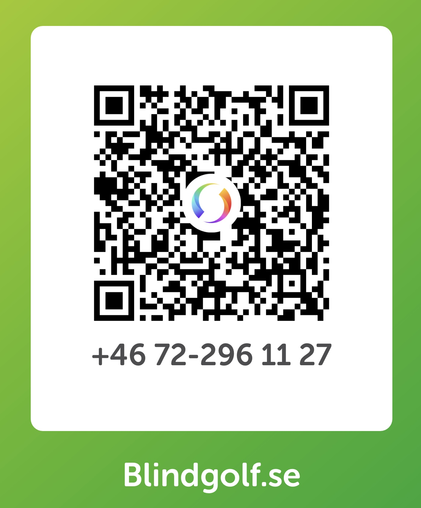

IBGA Spanish Blind Open 2025
11:e plats · Stableford
MICHAELA FRIBERG · BLINDGOLF

Synskadad golfare med siktet inställt på nya tävlingar, nya banor och nya mål.
Passion för golf
och nya mål
Jag heter Michaela Friberg och golfen har varit en del av mitt liv sedan jag var liten.
Efter ett uppehåll i tonåren hittade jag tillbaka till golfen. I dag spelar jag som synskadad golfare och har fått möjlighet att upptäcka en helt ny värld genom golfen.
För mig handlar golf om så mycket mer än slag och resultat. Det handlar om att utmana sig själv, utvecklas och våga satsa på sina drömmar.
Jag vill fortsätta utvecklas som golfspelare, tävla utomlands och se hur långt jag kan nå.
Genom Blindgolf.se vill jag dela min resa, berätta om tävlingarna och visa vad golfen betyder för mig.
Det här är min resa. Och jag har bara börjat.
Golfen ger mig nya utmaningar, möten och erfarenheter – både på och utanför banan.
Att spela golf som synskadad innebär att hitta nya sätt att läsa banan, bedöma avstånd och utveckla sitt spel.
Med rätt stöd, träning och samarbete går det att fortsätta utmana sig själv och utvecklas som golfare.
Genom golfen har jag fått möjlighet att spela på nya banor, träffa golfare från andra länder och delta i tävlingar där passionen för sporten förenar oss.
Varje tävling ger nya erfarenheter. Varje runda innebär en möjlighet att lära sig något nytt.
Jag vill fortsätta utvecklas, utmana mina egna gränser och ta nästa steg som golfare.
Min ambition är enkel: att fortsätta utvecklas och se hur långt golfen kan ta mig.
Genom golfen har jag fått möjlighet att tävla på nya banor, möta golfare från olika länder och utmana mig själv på internationell nivå.
Varje tävling ger nya erfarenheter och möjligheter att utvecklas. Här är några av de tävlingar jag deltagit i och resultaten jag är extra stolt över.
11:e plats · Stableford
🥉 3:e plats · Stableford
7:e plats totalt · Stableford
🥉 3:e plats i synkategori B3
🥈 2:a plats
🥇 1:a plats
🥇 1:a plats
Jag är stolt över den utveckling jag gjort och motiverad att fortsätta utmana mig själv. Det här är bara början på min resa inom golfen.
2027
Jag vill fortsätta utvecklas som golfspelare och ta mig an nya utmaningar på tävlingsbanor runt om i världen.
Under 2027 är målet att delta i flera tävlingar och fortsätta bygga erfarenhet på hög nivå.
Varje tävling innebär nya möjligheter att utvecklas, möta skickliga golfare och ta ytterligare steg i min golf.
För att kunna genomföra satsningen behövs både träning, resor och ekonomiska förutsättningar.
Därför söker jag samarbeten med företag och stöd från personer som vill hjälpa mig att förverkliga mina mål.
Jag vill fortsätta framåt. Och jag hoppas att du vill följa med på resan.
Stötta min satsningBakom varje golfsatsning finns träning, förberedelser och möjligheten att ta sig till tävlingarna.
Jag söker företag som vill vara med och stötta min fortsatta utveckling som synskadad golfare och bidra till att jag kan delta i tävlingar runt om i världen.
Som samarbetspartner blir ni en del av min resa och får möjlighet att förknippas med en personlig idrottssatsning som bygger på engagemang, utveckling och viljan att nå nya mål.
Jag tror på samarbeten som känns meningsfulla för båda parter. Därför vill jag gärna prata med företag som är intresserade av att hitta ett upplägg som passar just oss.
Hör av dig så berättar jag mer om min satsning och hur vi kan samarbeta.
Kontakta mig om sponsring →Tillsammans kan vi skapa möjligheter för fler tävlingsupplevelser och nya steg i min golfresa.
Min golfresa tar mig till nya banor, möten och utmaningar runt om i världen. Jag vill fortsätta utvecklas, tävla och se hur långt jag kan nå.
Du får mer än gärna vara med och stötta mig genom att swisha en gåva. Varje gåva, liten som stor, hjälper mig att komma iväg på tävlingar och fortsätta jaga mina mål.
Swish: 072-296 11 27

Swisha en gåvaTack för att du tror på mig och vill vara med och göra min golfresa möjlig!
Träning, tävlingar och nya utmaningar.
På Instagram delar jag med mig av min vardag som synskadad golfare, mina tävlingsupplevelser och vägen mot mina framtida mål.
Följ med bakom kulisserna och var en del av resan.
Följ mig på Instagram →Har du frågor om min golfsatsning, vill diskutera ett samarbete eller vill veta mer om golf?
Jag blir glad att höra från dig!
Oavsett om du är ett företag som vill samarbeta, en golfintresserad person eller någon som vill följa min resa är du varmt välkommen att höra av dig.
Tack för att du följer min resa!